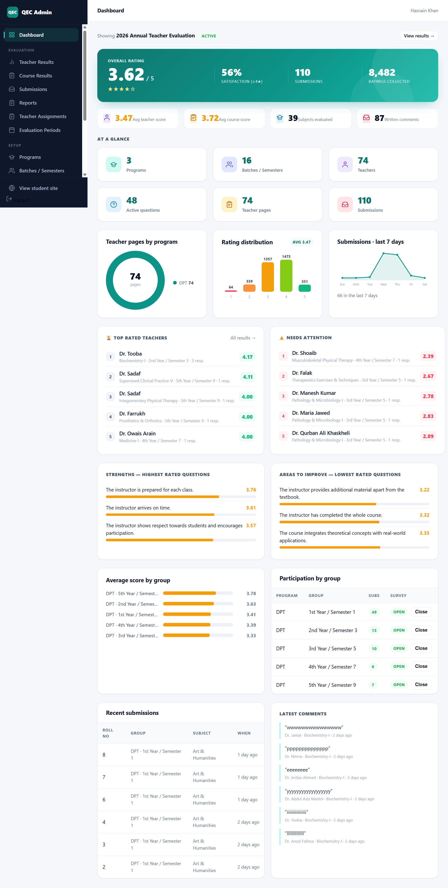
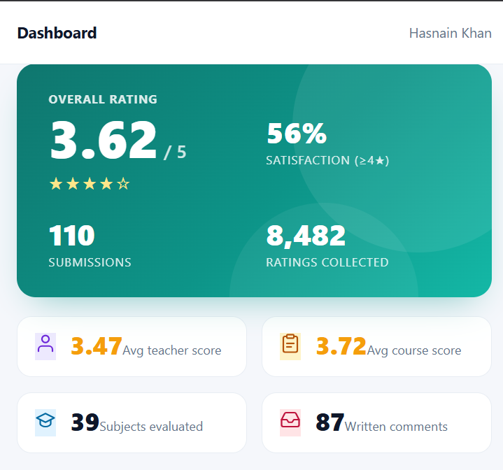

The Brief
The QEC Portal needed a central place to manage quality assurance tasks, collect review input, and keep reporting structured for staff who were previously relying on scattered documents.
A quality assurance portal built to organize academic reviews, feedback collection, and reporting in one clearer workflow.
The QEC Portal needed a central place to manage quality assurance tasks, collect review input, and keep reporting structured for staff who were previously relying on scattered documents.
I structured the portal around a dashboard, review forms, and report sections so the team could capture information quickly and follow the status of each QEC task without extra friction.

